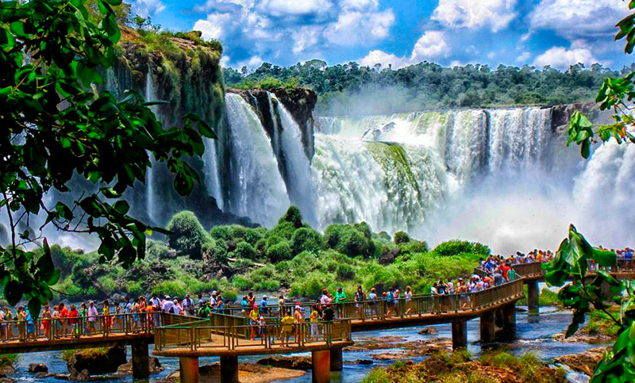
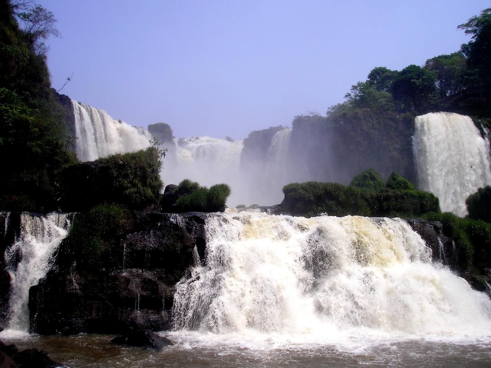
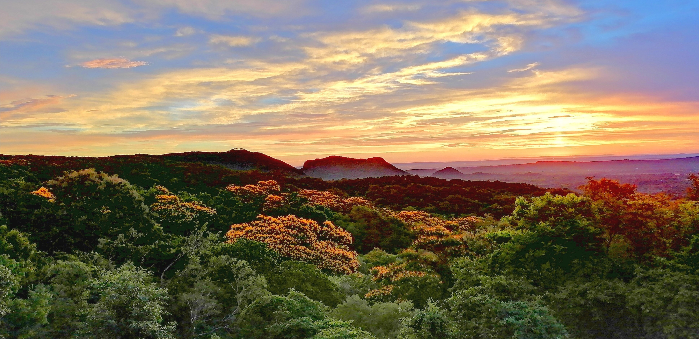

10 Lugares Turisticos del Paraguay
El turismo en Paraguay ofrece una gran variedad de experiencias. Puedes explorar
la belleza natural de los parques nacionales,. También puedes sumergirte en la cultura
visitando las misiones jesuiticas de Trinidad y Jesús de Tavarangue. ¡No pierdas la
oportunidad de conocer la riqueza historica y natural de Paraguay!

Cabañas de Ita Kua.
Se encuentra ubicaa a 48km de Asunción en Itacurubí de la Cordillera. Es una opción Turistica
Para disfrutar el feriado en familia, amigos y pareja. La Cabaña de Ita kua es una empresa
familiar que surgío con la idea de ofrecer un lugar para pasar en familia. las opciones de
costo de estadía son amplías tambien se puede acceder a ella por la agencía de turísmo. Los
servicios que ofrece son: Estadía de Cabaña Rustíca para dos personas, Cabaña Baja para una
capacidad de dos personas. El horario de ingreso 15:00hs y salida 16:00hs del día siguiente

Saber mas
Cataratas de Iguazú
Las imponentes cataratas del Iguazu es reconocido como patrimonio de la humanidad y una de las siete maravillas naturales del planeta,
son un conjunto de cataratas que se localian en el Río Iguazú, en el límite de la provincia Argentina
de Misiones, el estado brasileño del Paraná y tambien límita con Paraguay. Estan en un area protegida,
en el sector de Argentina se encuentran dentro del parque nacional Iguazú, mientras que Brazil se encuentra en el parque
nacional do Iguaçu, en el Estado de Paraná se encuentra proximas a la frontera entre Paraguay y Argentina, a solo 13,8 km en línea recta

Saber mas
Colonia Independencia
Es un municipio del departamento de Guairá. Se ha combertido en un centro de atracción turistica debido a los cerros y saltos que la rodean,
se encuentra ubicado al este del departamento sobre la cordillera Ybytyruzú. Entre las actividades obligadas se encuentran la imponente vista
de cerro Akatí
La zona también es conocida por ser poseedora de numerosos saltos de agua escondidos. Los más conociddos son Salto Suizo, Santo Cantera, y
salto Pa'i, el suizo tiene aproximadamente 40m de altura de saltos y piscinas naturales

Saber mas
Dunas de San Cosme y Damian
Las Dunas son grandes acumulaciones de arena de mas de 30 metros de altura y estan ubicadas en el centro mismo del lago Yacyretá, formado por las aguas del Río Paraná. Para llegar ahí hay que acercarce al puerto
de Marina de San Cosme y San Cosme.
El recorrido hasta las islas en lancha es aproximadamente 1h de ida y 1h vuelta.

Saber mas
Basilica Caácupe (Coordillera)
El Santuario de La Virgen de Caacupe es una basílica católica del paraguay que fue inaugurada el 8 de diciembre
de 1765 y se ha convertido en un lugar de peregrinación de numerosas creyentes de la ciudad y del país
La Basílica Caacupe se encuentra ubicado en la ciudad de caacupe departamento de coordillera a unos 54 kilometros de Asunción

Saber mas
Cerro Lambaré (Asunción)
El cerro lambaré es una locacion o monticulo se encuentra situado a orillas del Río Paraguay dentro del radio urbano de la ciudad
de Asunción en un barrio conocido como itá Erramada.
El 31 de marzo de 1948 fue declarado como Sona Nacional de Reserva este cerro es uno de los atractivos
del paraguay que debes conocer, esta rodeado de una pequeña vegetación y sobre el se halla un mirador abierto
para turistas y un monumento que representa al cacique lambare

Saber mas
Salto Cristal (Paraguarí)
El Salto Cristal es uno de los lugares turisticos del Paraguay, se halla localizado en el departamento de Paraguarí, a 150 km
de Asunción. Tiene 45m de altura
Este es uno de los lugares turisticos del Paraguay que desde elo 2015 se ha realizado mejoras para que los turistas puedan
acceder facilmente, actualmente tiene escaleras y senderos remarcados para poder disfrutar de la naturaleza. También cuenta
con arroyos y bosques

Saber mas
Parque nacional de Yvycuí
El parque Nacional Yvycuí está situado en el departamento de Paraguarí. Es un lugar dotado de mucha vegetación
y allí se encuentra el fabuloso Santo Cristal, de 45m de altura
Es un lugar muy visitado por las personas que le gustan la aventura porque el trayecto para llegar hasta el sitio
es un poco accidentado. Ademas se puede apreciar el senderismo y deportes extremos como rapel, snorkel y escalada.
El inponente salto con pileta natural conforman un hermoso paisaje digno de ser visitado.

Saber mas
Salto Monday
El parque Municipal Monday, el el distrito de Presidente Franco se encuentran hermosos saltos, que es uno de los
principales atractivos turisticos del Paraguay. El parque posee un total de 14 hectareas, cinco hectareas
para obras de infraestructura futuras, y una reserva natural de nueve hectareas cubrida por extensa vegetacion
con especie de de flora y fauna muy caracteristicas de esta region boscosa del antiguo Alto Paraná
El parque esta abierto de 8:00 a 17:00 HS de martes a domingo los visitantes podran disfritar de tiloresa,
arqueria, rapel, etc. También se encuentra recuerdos de artesanias

Saber mas
Eco reserva Mbatoví
Es una area protegida privada, que preserva uno de los paisajes mas bellos del Paraguay. La reservaesta situada
en plena Cordillera de los Altos, en el departamento de Paraguarí y forma parte de la ecorregión denominada Litoral
centrada del Paraguay. Su acceso esta ubicado a 72km de Asunción, sobre la ruta asfaltada Gral. Rogelio R Benitez
El precio general de la ecoaventura es de 130.000 G por persona.

Saber mas